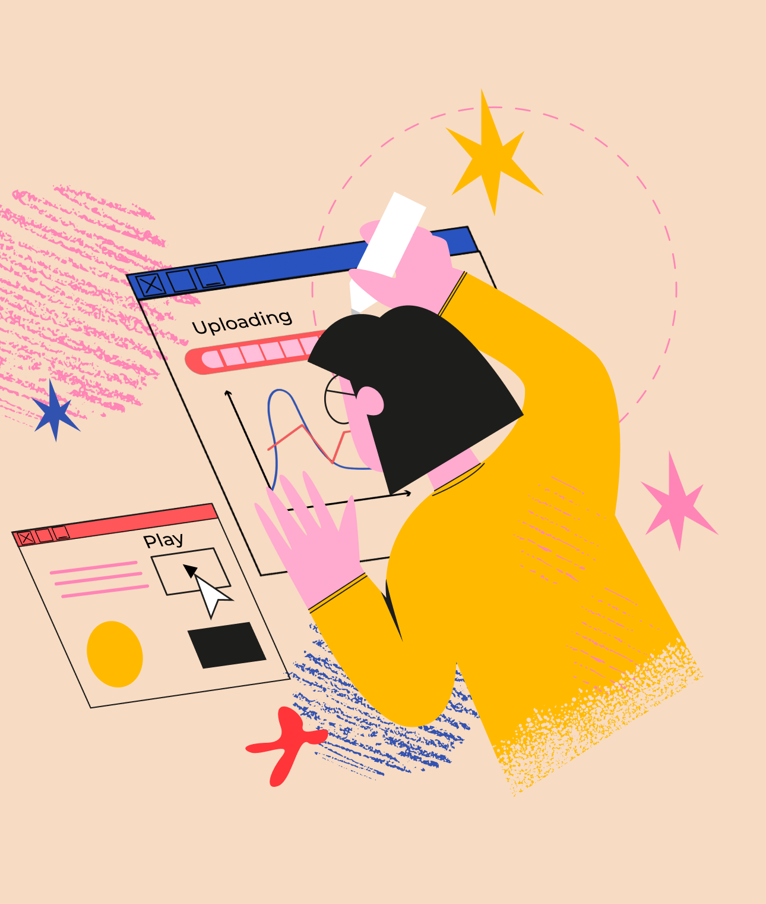
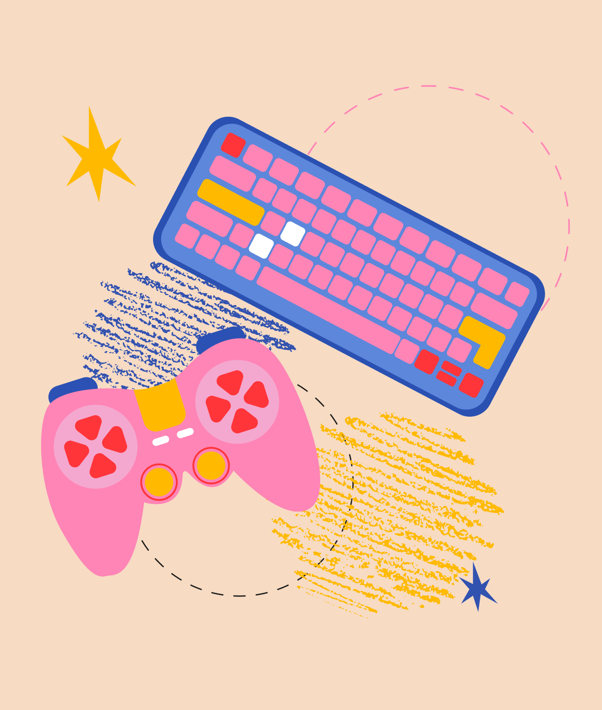
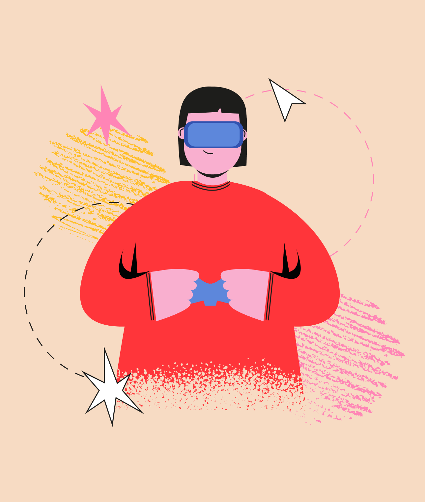
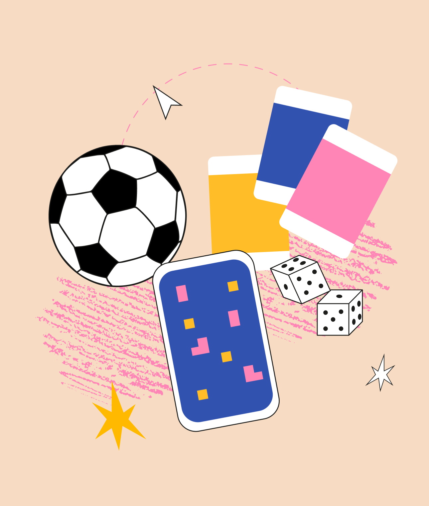

Пройди тест и убедись, что у тебя получилось верно понять, кто такой гейм-дизайнер и что он делает.
Пройди тест и убедись, что у тебя получилось верно понять, кто такой гейм-дизайнер и что он делает.
начать тест >

Вопрос 1 из 5
< Назад
С чего начинается разработка любой игры?
Неверно. Или не совсем верно: конечно, как любой продукт, игра должна себя окупить. Но сначала – концепция!
Верно. Конечно, не понимая, о чем будет игра, в каком жанре и какие эмоции будет дарить, начать ее разработку
гейм-дизайнер не может.
Неверно. Эскизы, арты – далеко не первый этап. Ими займутся художники, когда получат техническое задание от
гейм-дизайнера.
далее >

Вопрос 2 из 5
< Назад
Без чего не может существовать игра?
Верно. Баланс – важнейшая характеристика любой игры, не только компьютерной. Если бы белые фигуры всегда выигрывали в
шахматы, этой игры не существовало бы.
Неверно. Да, сегодня мы привыкли к патчам, дополнениям
и другим обновлениям, но это совершенно не обязательная часть игры.
Неверно. Так называемый “открытый мир”, когда игрок может решать, по какой “дороге” направиться, – особенность совсем
небольшого числа игр.
далее >

Вопрос 3 из 5
< Назад
У гейм-дизайнера должно быть много качеств и навыков. Но без какого он не может работать?
Неверно. Навыки программирования очень пригодятся, но если гейм-дизайнер не может придумать идею игры – игры не будет.
Поэтому верный ответ – креативность.
Верно. Конечно, без умения придумывать новое и представлять, как оно будет работать, гейм-дизайнер не запустит процесс
создания игры.
Неверно. Хотя наполовину верно: после креативности лидерские качества – вторые по значимости, потому что над
современными играми работает целая команда профессионалов.
далее >

Вопрос 4 из 5
< Назад
По какому принципу ландшафтные дизайнеры выбирают те или растения для своего проекта?
Неверно. Мобильные игры сегодня – одна из самых востребованных сфер для гейм-дизайнеров.
Неверно. Гейм-дизайнеры ассоциируются с компьютерными играми, но настольные игры сегодня тоже большая индустрия. А
нередко настольные становятся компьютерными – и наоборот.
Верно. У спортивных игр свои механики, и большая их часть исторически регламентирована.
далее >
Вопрос 5 из 5
< Назад
Есть только одна преграда для того, чтобы стать гейм-дизайнером. Какая?
Неверно. Придумывать сюжеты, необычные концепции и визуальные подходы – все это работа гейм-дизайнера. И
программирование здесь не так важно.
Неверно. Да, языки – английский, программирования – пригодятся. Но это навыки, которым можно научиться, а не преграда
для того, кто хочет войти в профессию.
Верно. Зачем заниматься тем, что не любишь? В любом продукте всегда читается отношение того, кто его делал, и игры – не
исключение.